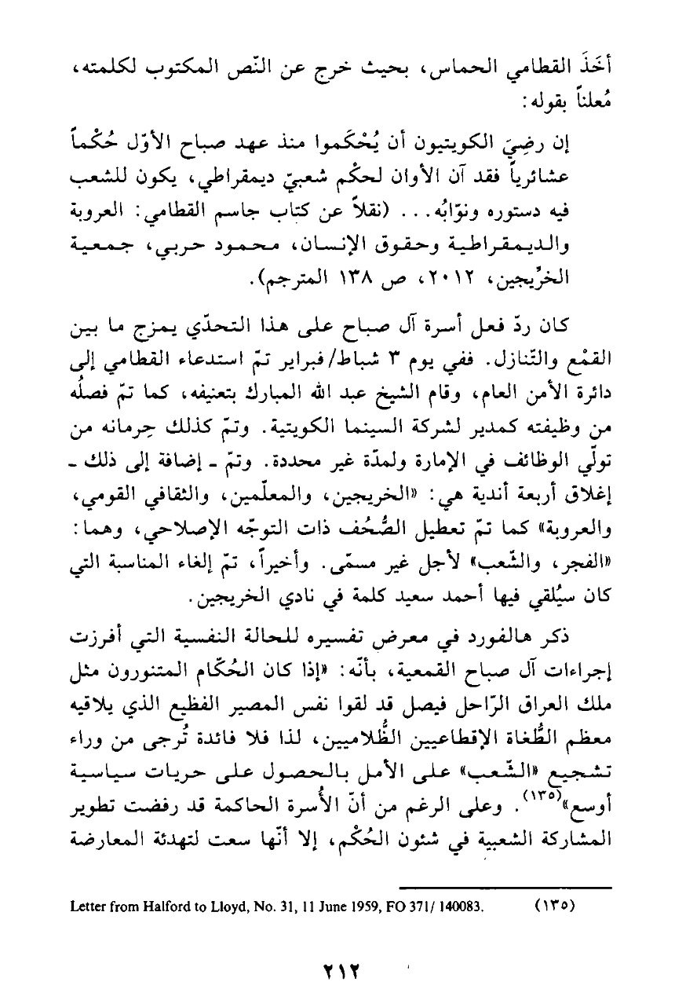
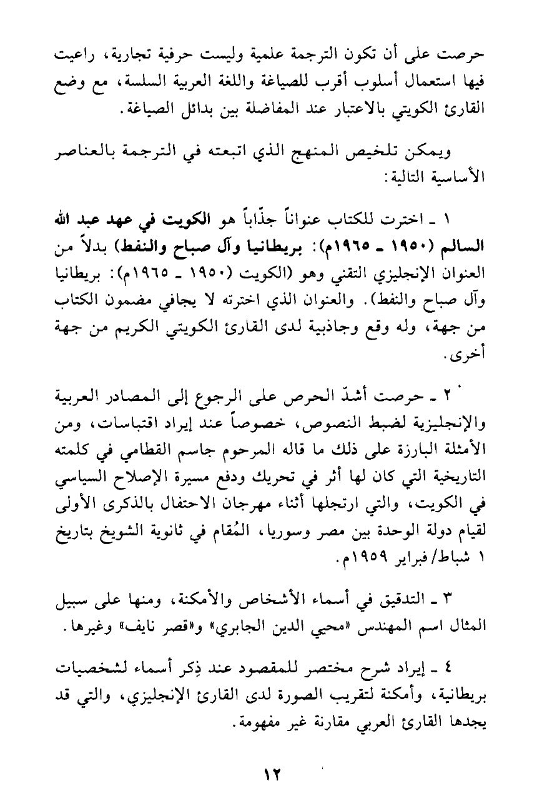

1 to 3 February 1959; Arabic translation · Book pages, Simon C. Smith, Al-Kuwait fi ‘Ahd Abdullah Al-Salem (1950 to 1965): Britannia wa Al Sabah wal-Naft, translated by Bader Naser Al-Hutaita Al-Mutairi, Jusoor
Simon C. Smith on Jassim Al-Qatami’s speech of 1 February 1959 and what followed
What it is
1. At the celebration of the first anniversary of the union of Egypt and Syria, at Shuwaikh Secondary School on 1 February 1959, Al-Qatami was carried away and went beyond his written text, declaring that Kuwaitis had accepted tribal rule since Sabah I and that the time had come for a popular democratic government with its own constitution and representatives (quoted from Mahmoud Harbi, Jassim Al-Qatami: Al-Uruba wal-Dimuqratiya wa-Huquq Al-Insan, 2012, page 138). 2. On 3 February he was summoned to Public Security and rebuked by Sheikh Abdullah Al-Mubarak, dismissed as director of the Kuwait Cinema Company and barred from government posts; four clubs were closed and two papers suspended. 3. The translator gives this speech as the leading example of why he checked quotations against the Arabic sources.
Why it matters
A British archive based history that records the 1959 speech and the price Jassim paid for it.
Page copies


Notes
Only the first pages are shown here. Family members who sign in can see all 4 pages.
Sources
Simon C. Smith, Al-Kuwait fi ‘Ahd Abdullah Al-Salem (1950 to 1965), translated by Bader Naser Al-Hutaita Al-Mutairi, Jusoor lil-Tarjama wal-Nashr, pages 12, 211 and 212
How this text was made: Page copies of a published book.
Open in the interactive site